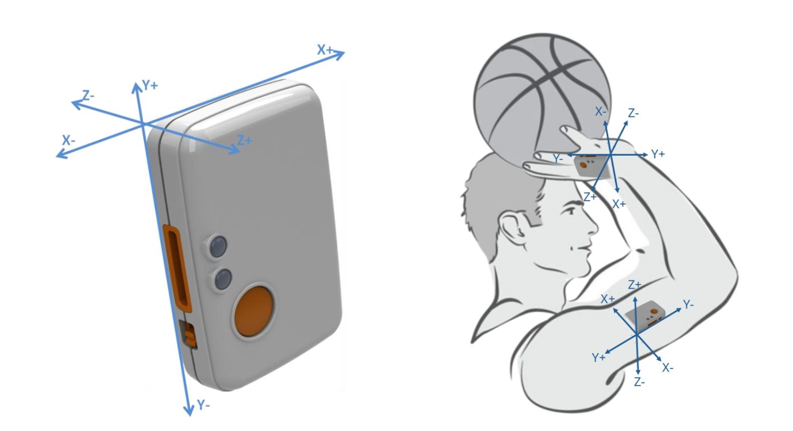

Basketball Shot Analysis with Machine Learning

Project Summary
This project uses wearable IMU sensors and machine learning to analyze and classify basketball shots. By collecting wrist and upper-arm movement data from college players, we trained models to determine shot outcome (make/miss), shooting position, and player experience level. Our workflow demonstrates how sports analytics and data science can enhance training and performance feedback for athletes and coaches.
- Data-Driven Approach: Collected inertial data from 14 players taking shots from multiple court locations using Shimmer IMU sensors.
- Feature Engineering: Extracted statistical features (mean, variance, maximum) from raw accelerometer and gyroscope signals for each shot.
- Advanced Modeling: Trained five ML models, including Artificial Neural Networks (ANN), Support Vector Classifiers (SVC), Random Forests, KNN, and XGBoost.
- Key Results: XGBoost achieved 94% accuracy for shot location, SVC achieved 76% accuracy for make/miss prediction, and ANN/SVC classified player experience with near-perfect accuracy.
- Insights: The most crucial features included hand/arm acceleration and rotation in the y-axis. Experienced players showed distinctive, more consistent movement patterns than novices.
Technical Highlights
- Experimental Setup: Each participant wore sensors on their shooting hand and upper arm; shots were taken from three distances (4 ft, free throw, three-point arc).
- Data Processing: Segmented motion data around shot release, engineered features, and labeled data by shot outcome/location/experience level.
- Model Validation: Used 70/30 train-test splits and hyperparameter tuning (via GridSearchCV) for fair evaluation.
- Deployment Potential: The pipeline can be adapted for real-time feedback in training or embedded in wearable devices for athletes.
Lessons Learned
- Data quality is critical—accurate sensor placement and calibration ensure meaningful results.
- Hand motion, especially in the y-axis, is a strong indicator of both shot quality and player expertise.
- Machine learning models can classify complex sports actions with high accuracy, but more data and advanced models (e.g., deep learning) could further improve predictions.
- Collaboration between engineering and athletics unlocks new opportunities for wearable tech in sports analytics.
- Interpreting ML feature importance helps coaches and athletes understand what movement patterns impact performance.